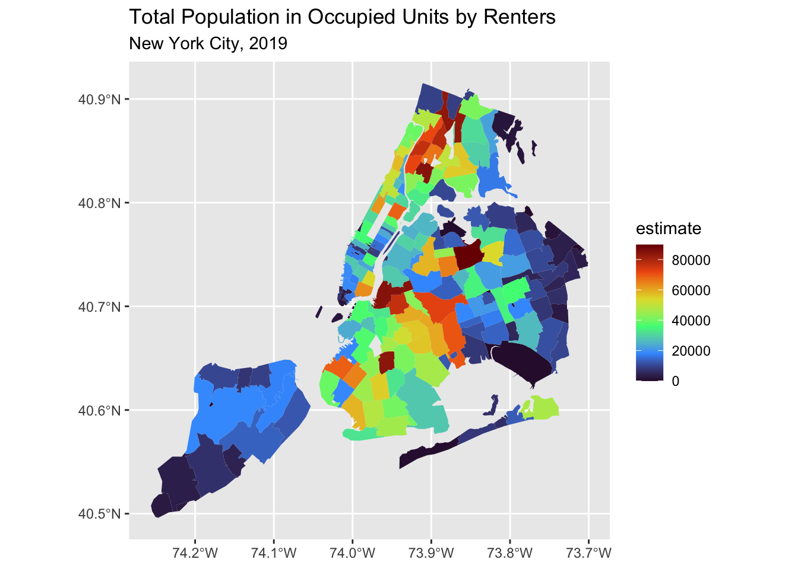
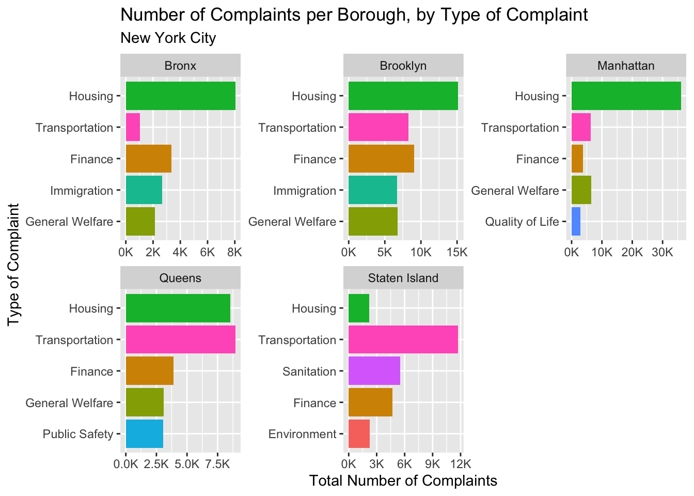
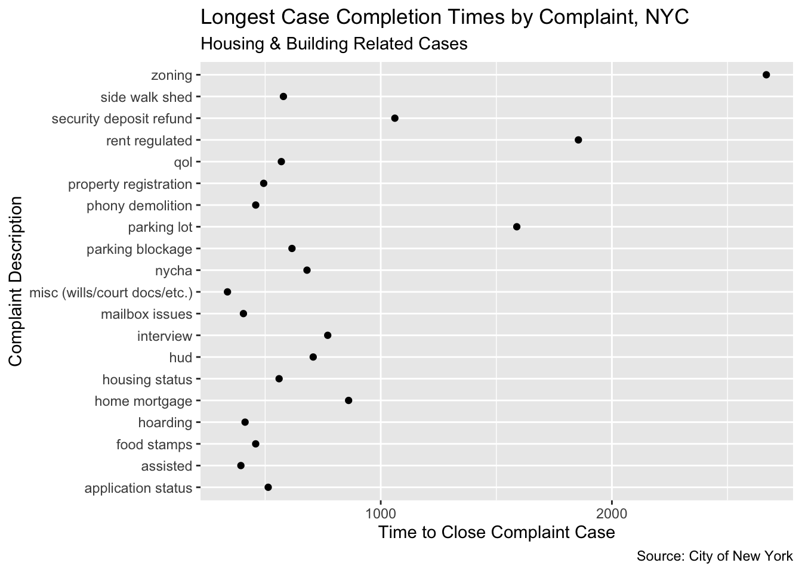
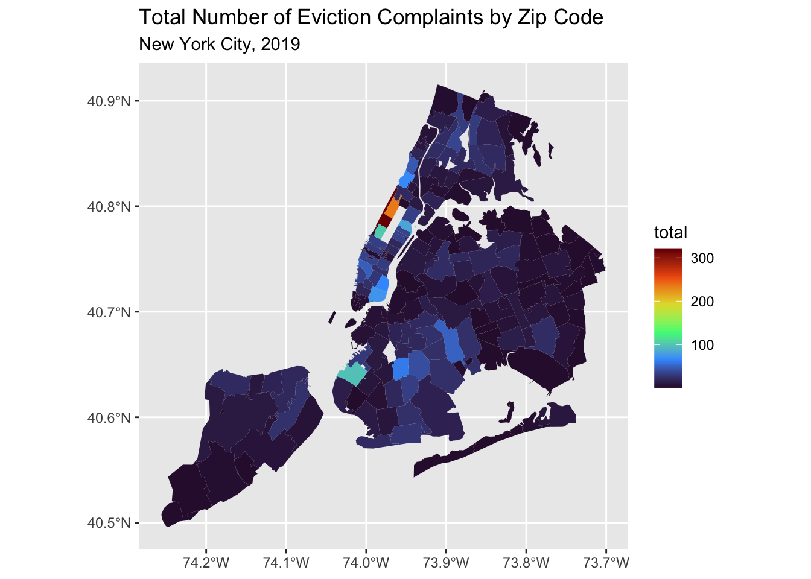

library(tidyverse)
library(here)
library(socviz)
## Mapping
library(sf)
## Census
## Make sure you have a census API key! You only need one.
## https://api.census.gov/data/key_signup.html
library(tidycensus)
options(tigris_use_cache = TRUE)
## Install the data package:
## remotes::install_github("kjhealy/nycomplaints")
library(nycomplaints)Problem Set 12: NYC Complaints Data
The dataset
The dataset is documented on its website. The source data is from NYC Open Data.
Read the documentation before working with the data.
Explore the data
The complaints data:
nycomplaints# A tibble: 341,299 × 11
unique_key account opendate closedate complaint_type descriptor zip
<chr> <chr> <date> <date> <chr> <chr> <chr>
1 NYCC34519748 NYCC34 2025-01-09 NA Governmental Ope… Voting In… 11385
2 NYCC34519746 NYCC34 2025-01-09 2025-01-09 Utilities Con Edison 11237
3 NYCC34519742 NYCC34 2025-01-08 2025-01-08 Housing and Buil… Heat/Hot … 11249
4 NYCC34519741 NYCC34 2025-01-06 2025-01-08 Housing and Buil… Heat/Hot … 11211
5 NYCC34519743 NYCC34 2024-12-23 2025-01-09 Housing and Buil… Maintenan… 11211
6 NYCC34519744 NYCC34 2024-12-11 2025-01-09 General Welfare SSI and S… 11211
7 NYCC34519745 NYCC34 2024-09-05 2025-01-09 Finance Tax Prepa… 11385
8 NYCC31505454 NYCC31 2024-06-04 NA Sanitation OVERGROWN… <NA>
9 NYCC31505447 NYCC31 2024-05-30 NA <NA> <NA> 11413
10 NYCC31505450 NYCC31 2024-05-30 NA <NA> <NA> 11413
# ℹ 341,289 more rows
# ℹ 4 more variables: borough <chr>, city <chr>, council_dist <chr>,
# community_board <chr>Two useful tables
nyc_zips# A tibble: 211 × 6
zip borough city county long_county short_county
<dbl> <chr> <chr> <chr> <chr> <chr>
1 11368 Queens Corona Queens County Queens County… Queens
2 11208 Brooklyn Brooklyn Kings County Kings County,… Kings
3 11385 Queens Ridgewood Queens County Queens County… Queens
4 11373 Queens Elmhurst Queens County Queens County… Queens
5 11226 Brooklyn Brooklyn Kings County Kings County,… Kings
6 11236 Brooklyn Brooklyn Kings County Kings County,… Kings
7 10467 Bronx Bronx Bronx County Bronx County,… Bronx
8 10025 Manhattan New York New York County New York Coun… New York
9 11207 Brooklyn Brooklyn Kings County Kings County,… Kings
10 10314 Staten Island Staten Island Richmond County Richmond Coun… Richmond
# ℹ 201 more rowscensus_vars# A tibble: 9 × 2
variable varname
<chr> <chr>
1 B01001_001 population
2 B02001_002 white_alone
3 B02001_003 black_alone
4 B02001_005 asian_alone
5 B02001_008 two_or_more_races
6 B03003_001 hispanic
7 B03002_003 nonhispanic_white
8 B03002_004 nonhispanic_black
9 B19013_001 med_hhinc 1. Create a zipcode-level base map
The nyzip_demog table has demographic data for New York City by zip code, but it does not have map data (i.e. the polygon geometry). Use get_acs() from the tidycensus package to get the spatial data by ZCTA.
Hints:
- You should specify a year. Choose 2019.
- The zip code tabulation area (“zcta”) geography is what you want.
- You only want data for New York State (NY).
- You have to ask the Census API for data for some variable by the geography you want. You can use any variable you want, or more than one. Some sample ones are given in
acs_vars. - If you get more than one variable, consider reshaping/pivoting the data to put those variables in columns. If you pivot the data you may find that you have to convert it to a tibble first and that while the result still has
geometrycolumn it is not recognized as ansfobject. Look atsf::st_as_sf()to convert it back. - If you get data for New York State, you will get all the zip codes in the state. You only want data for the zip codes that are in NYC. But you know what those are.
Additionally, this may be a good time to think about dividing your project up in to more than one file. For example, you could have one R script that does the work above to produce an object you could save, or that you source into this file. (See ?source.)
Additional variables
The ACS has a lot of data. Consider the very long list of variables here:
## Table of all 2019 ACS variables:
acs_vars <- load_variables(year = 2019, dataset = "acs5")# Total population in occupied units by renters
zip_data <- get_acs(geography = "zcta",
variables = "B25008_003",
state = "NY",
year = 2019,
geometry = TRUE)Getting data from the 2015-2019 5-year ACS# Keep zip codes in NYC only
zip_data <- zip_data |>
filter(GEOID %in% nyc_zips$zip)
zip_data |>
ggplot(aes(fill = estimate)) +
geom_sf(color = NA) +
scale_fill_viridis_c(option = "turbo") +
labs(title = "Total Population in Occupied Units by Renters",
subtitle = "New York City, 2019")
Other information
Hint: You can use st_drop_geometry() to change a spatial table into a simple tibble:
## See how the `geometry` column disappears
zip_data |>
st_drop_geometry() GEOID NAME variable estimate moe
1 11219 ZCTA5 11219 B25008_003 64491 2863
2 10021 ZCTA5 10021 B25008_003 23676 2227
3 10044 ZCTA5 10044 B25008_003 8559 897
4 11213 ZCTA5 11213 B25008_003 52140 2052
5 11424 ZCTA5 11424 B25008_003 0 12
6 10005 ZCTA5 10005 B25008_003 6703 856
7 10311 ZCTA5 10311 B25008_003 0 12
8 10280 ZCTA5 10280 B25008_003 6631 811
9 11365 ZCTA5 11365 B25008_003 21627 1581
10 11205 ZCTA5 11205 B25008_003 32545 1615
11 10170 ZCTA5 10170 B25008_003 0 12
12 11429 ZCTA5 11429 B25008_003 6436 1003
13 10003 ZCTA5 10003 B25008_003 28183 1319
14 11451 ZCTA5 11451 B25008_003 0 12
15 11358 ZCTA5 11358 B25008_003 14847 1063
16 11359 ZCTA5 11359 B25008_003 0 12
17 10453 ZCTA5 10453 B25008_003 76578 1996
18 10016 ZCTA5 10016 B25008_003 36270 2507
19 11378 ZCTA5 11378 B25008_003 17968 1178
20 10279 ZCTA5 10279 B25008_003 42 66
21 11418 ZCTA5 11418 B25008_003 20800 1614
22 10167 ZCTA5 10167 B25008_003 0 12
23 10153 ZCTA5 10153 B25008_003 0 12
24 11204 ZCTA5 11204 B25008_003 45252 1987
25 10308 ZCTA5 10308 B25008_003 4273 987
26 10007 ZCTA5 10007 B25008_003 3635 656
27 11421 ZCTA5 11421 B25008_003 18245 1416
28 10177 ZCTA5 10177 B25008_003 0 12
29 10111 ZCTA5 10111 B25008_003 0 12
30 10152 ZCTA5 10152 B25008_003 0 12
31 10017 ZCTA5 10017 B25008_003 8740 1031
32 10012 ZCTA5 10012 B25008_003 17280 1163
33 11233 ZCTA5 11233 B25008_003 56075 2196
34 11239 ZCTA5 11239 B25008_003 12362 884
35 10006 ZCTA5 10006 B25008_003 2410 382
36 10457 ZCTA5 10457 B25008_003 66481 2074
37 10459 ZCTA5 10459 B25008_003 41570 1423
38 10110 ZCTA5 10110 B25008_003 0 12
39 11379 ZCTA5 11379 B25008_003 13525 1060
40 10165 ZCTA5 10165 B25008_003 0 12
41 10271 ZCTA5 10271 B25008_003 0 12
42 10069 ZCTA5 10069 B25008_003 4329 730
43 10162 ZCTA5 10162 B25008_003 1486 517
44 10171 ZCTA5 10171 B25008_003 0 12
45 10169 ZCTA5 10169 B25008_003 0 12
46 10168 ZCTA5 10168 B25008_003 0 12
47 11221 ZCTA5 11221 B25008_003 59669 2341
48 10023 ZCTA5 10023 B25008_003 35851 2202
49 11102 ZCTA5 11102 B25008_003 24738 1194
50 11426 ZCTA5 11426 B25008_003 4901 1057
51 11109 ZCTA5 11109 B25008_003 5344 889
52 11217 ZCTA5 11217 B25008_003 27172 1456
53 11225 ZCTA5 11225 B25008_003 46068 1916
54 11226 ZCTA5 11226 B25008_003 84033 2434
55 11363 ZCTA5 11363 B25008_003 1656 363
56 11373 ZCTA5 11373 B25008_003 65112 2565
57 11411 ZCTA5 11411 B25008_003 2597 512
58 11416 ZCTA5 11416 B25008_003 13903 924
59 11435 ZCTA5 11435 B25008_003 34542 1945
60 10112 ZCTA5 10112 B25008_003 0 12
61 10456 ZCTA5 10456 B25008_003 84636 2387
62 10020 ZCTA5 10020 B25008_003 0 12
63 10154 ZCTA5 10154 B25008_003 0 12
64 11104 ZCTA5 11104 B25008_003 19675 1079
65 11372 ZCTA5 11372 B25008_003 44317 2112
66 10278 ZCTA5 10278 B25008_003 0 12
67 11230 ZCTA5 11230 B25008_003 55260 2009
68 10029 ZCTA5 10029 B25008_003 68532 2188
69 10075 ZCTA5 10075 B25008_003 12040 2057
70 10172 ZCTA5 10172 B25008_003 0 12
71 10474 ZCTA5 10474 B25008_003 10120 720
72 11413 ZCTA5 11413 B25008_003 11232 1051
73 10199 ZCTA5 10199 B25008_003 0 12
74 10115 ZCTA5 10115 B25008_003 0 12
75 10303 ZCTA5 10303 B25008_003 10005 1486
76 10009 ZCTA5 10009 B25008_003 53957 1900
77 10032 ZCTA5 10032 B25008_003 57573 2698
78 10103 ZCTA5 10103 B25008_003 0 12
79 10025 ZCTA5 10025 B25008_003 62165 3039
80 10309 ZCTA5 10309 B25008_003 3398 919
81 10470 ZCTA5 10470 B25008_003 8705 816
82 10472 ZCTA5 10472 B25008_003 55581 2014
83 10468 ZCTA5 10468 B25008_003 71700 2177
84 11366 ZCTA5 11366 B25008_003 4731 776
85 10033 ZCTA5 10033 B25008_003 52616 2184
86 10454 ZCTA5 10454 B25008_003 33224 1640
87 11354 ZCTA5 11354 B25008_003 31471 1921
88 10019 ZCTA5 10019 B25008_003 35593 1862
89 10467 ZCTA5 10467 B25008_003 83426 2745
90 11216 ZCTA5 11216 B25008_003 41024 1567
91 10036 ZCTA5 10036 B25008_003 25205 1435
92 10040 ZCTA5 10040 B25008_003 40101 2005
93 10173 ZCTA5 10173 B25008_003 0 12
94 10451 ZCTA5 10451 B25008_003 43105 2028
95 11369 ZCTA5 11369 B25008_003 13239 1104
96 11101 ZCTA5 11101 B25008_003 25225 1665
97 10469 ZCTA5 10469 B25008_003 30900 1883
98 10002 ZCTA5 10002 B25008_003 63306 1976
99 11436 ZCTA5 11436 B25008_003 5163 661
100 10466 ZCTA5 10466 B25008_003 41021 2187
101 10010 ZCTA5 10010 B25008_003 22801 1936
102 11220 ZCTA5 11220 B25008_003 68830 2602
103 10039 ZCTA5 10039 B25008_003 23980 1650
104 11417 ZCTA5 11417 B25008_003 11364 1125
105 11203 ZCTA5 11203 B25008_003 40985 1589
106 11218 ZCTA5 11218 B25008_003 43160 1882
107 11207 ZCTA5 11207 B25008_003 59987 2359
108 10314 ZCTA5 10314 B25008_003 18254 1551
109 10458 ZCTA5 10458 B25008_003 78742 2189
110 10022 ZCTA5 10022 B25008_003 14959 1311
111 10024 ZCTA5 10024 B25008_003 30533 1852
112 11370 ZCTA5 11370 B25008_003 10812 1126
113 11430 ZCTA5 11430 B25008_003 0 12
114 10455 ZCTA5 10455 B25008_003 37305 1712
115 10119 ZCTA5 10119 B25008_003 0 12
116 10031 ZCTA5 10031 B25008_003 51268 2717
117 11415 ZCTA5 11415 B25008_003 11306 1057
118 11375 ZCTA5 11375 B25008_003 34488 1525
119 10037 ZCTA5 10037 B25008_003 18903 1214
120 10174 ZCTA5 10174 B25008_003 0 12
121 10011 ZCTA5 10011 B25008_003 28037 1598
122 11106 ZCTA5 11106 B25008_003 29534 1232
123 11223 ZCTA5 11223 B25008_003 48017 2135
124 10065 ZCTA5 10065 B25008_003 18394 1549
125 10463 ZCTA5 10463 B25008_003 48002 2157
126 10030 ZCTA5 10030 B25008_003 26571 1639
127 11367 ZCTA5 11367 B25008_003 21540 1858
128 11692 ZCTA5 11692 B25008_003 12962 1145
129 10038 ZCTA5 10038 B25008_003 16245 699
130 10475 ZCTA5 10475 B25008_003 22334 2736
131 11229 ZCTA5 11229 B25008_003 40217 1778
132 11422 ZCTA5 11422 B25008_003 9852 1207
133 10035 ZCTA5 10035 B25008_003 30375 1706
134 10018 ZCTA5 10018 B25008_003 7680 644
135 11208 ZCTA5 11208 B25008_003 70067 2216
136 10473 ZCTA5 10473 B25008_003 40740 1835
137 10027 ZCTA5 10027 B25008_003 49847 1843
138 11691 ZCTA5 11691 B25008_003 46734 2969
139 11355 ZCTA5 11355 B25008_003 53925 2401
140 10471 ZCTA5 10471 B25008_003 9247 841
141 11234 ZCTA5 11234 B25008_003 28143 1995
142 11361 ZCTA5 11361 B25008_003 11031 921
143 11004 ZCTA5 11004 B25008_003 3207 735
144 10013 ZCTA5 10013 B25008_003 18823 1280
145 11215 ZCTA5 11215 B25008_003 36882 1587
146 10461 ZCTA5 10461 B25008_003 29298 1666
147 10306 ZCTA5 10306 B25008_003 13646 1404
148 10301 ZCTA5 10301 B25008_003 17607 1533
149 10302 ZCTA5 10302 B25008_003 7387 978
150 10304 ZCTA5 10304 B25008_003 17786 1649
151 10307 ZCTA5 10307 B25008_003 2419 504
152 10312 ZCTA5 10312 B25008_003 6571 1056
153 11211 ZCTA5 11211 B25008_003 84646 2719
154 11231 ZCTA5 11231 B25008_003 23781 1155
155 11005 ZCTA5 11005 B25008_003 90 75
156 11103 ZCTA5 11103 B25008_003 29505 1198
157 11201 ZCTA5 11201 B25008_003 36669 1510
158 11209 ZCTA5 11209 B25008_003 39184 1754
159 10004 ZCTA5 10004 B25008_003 1859 322
160 10026 ZCTA5 10026 B25008_003 31170 1539
161 10128 ZCTA5 10128 B25008_003 37804 1870
162 10282 ZCTA5 10282 B25008_003 5059 492
163 11214 ZCTA5 11214 B25008_003 58375 2092
164 11224 ZCTA5 11224 B25008_003 32235 1823
165 11360 ZCTA5 11360 B25008_003 4975 744
166 11362 ZCTA5 11362 B25008_003 3758 790
167 11368 ZCTA5 11368 B25008_003 89751 3266
168 11374 ZCTA5 11374 B25008_003 25716 1600
169 11693 ZCTA5 11693 B25008_003 6215 908
170 11697 ZCTA5 11697 B25008_003 117 138
171 11423 ZCTA5 11423 B25008_003 10244 1124
172 11427 ZCTA5 11427 B25008_003 7909 980
173 11428 ZCTA5 11428 B25008_003 4602 676
174 11433 ZCTA5 11433 B25008_003 18185 1472
175 11434 ZCTA5 11434 B25008_003 26156 1954
176 11236 ZCTA5 11236 B25008_003 46129 2216
177 11238 ZCTA5 11238 B25008_003 35013 1493
178 10460 ZCTA5 10460 B25008_003 49957 1885
179 11377 ZCTA5 11377 B25008_003 58417 2484
180 11385 ZCTA5 11385 B25008_003 72797 2552
181 11412 ZCTA5 11412 B25008_003 7610 738
182 11419 ZCTA5 11419 B25008_003 17073 1522
183 10001 ZCTA5 10001 B25008_003 16783 1390
184 10465 ZCTA5 10465 B25008_003 16457 1192
185 11235 ZCTA5 11235 B25008_003 45606 2079
186 10462 ZCTA5 10462 B25008_003 56269 1939
187 10305 ZCTA5 10305 B25008_003 12311 1322
188 11210 ZCTA5 11210 B25008_003 32441 1619
189 10034 ZCTA5 10034 B25008_003 39244 1879
190 11364 ZCTA5 11364 B25008_003 10263 1314
191 11420 ZCTA5 11420 B25008_003 13778 1433
192 11356 ZCTA5 11356 B25008_003 12463 1332
193 11432 ZCTA5 11432 B25008_003 35994 1687
194 11232 ZCTA5 11232 B25008_003 18233 1027
195 10028 ZCTA5 10028 B25008_003 28778 1896
196 11206 ZCTA5 11206 B25008_003 76646 2297
197 11228 ZCTA5 11228 B25008_003 18263 1444
198 11105 ZCTA5 11105 B25008_003 25482 1194
199 11222 ZCTA5 11222 B25008_003 28279 964
200 11371 ZCTA5 11371 B25008_003 0 12
201 11212 ZCTA5 11212 B25008_003 56255 2632
202 11237 ZCTA5 11237 B25008_003 42424 2000
203 10452 ZCTA5 10452 B25008_003 72028 1858
204 11414 ZCTA5 11414 B25008_003 7675 1194
205 10014 ZCTA5 10014 B25008_003 18851 1047
206 10310 ZCTA5 10310 B25008_003 9095 1004
207 10464 ZCTA5 10464 B25008_003 1776 610
208 11694 ZCTA5 11694 B25008_003 8015 902
209 11357 ZCTA5 11357 B25008_003 8901 1341Things to do
1. Briefly Describe the Dataset
- Summarize the
nycomplaintstibble in a way you think is informative to you.
# Organize by the most common complaint types
comp_types <- nycomplaints |>
group_by(complaint_type) |>
summarize(total = n()) |>
arrange(desc(total))
print(comp_types, n = Inf)# A tibble: 60 × 2
complaint_type total
<chr> <int>
1 Housing and Buildings 81381
2 Transportation 43391
3 Finance 28350
4 General Welfare 23219
5 Immigration 18186
6 Sanitation 16038
7 Public Safety 13755
8 Parks 13504
9 Governmental Operations 11522
10 Legal Services 9958
11 Environment 9915
12 Utilities 8807
13 Education 8299
14 <NA> 7431
15 Quality of Life 7309
16 Health 7237
17 COVID-19 6012
18 Economy/Jobs 4889
19 Aging 4593
20 Consumer Affairs 4346
21 Cultural Affairs 4034
22 Land Use and Zoning 3119
23 Civil Service and Labor 1969
24 Youth Services 782
25 Recovery and Resiliency 681
26 Human and Civil Rights 623
27 @getxlate.Udf_Code_Genera 617
28 Consumer Complaints 363
29 Please choose an issue... 282
30 Veterans Affairs 275
31 CRIMINAL JUSTICE 84
32 FIRE AND EMERGENCY MANAGE 76
33 JUSTICE SYSTEM 43
34 MENTAL HEALTH-DISABILITY- 39
35 HOSPITALS 27
36 CONTRACTS 22
37 SMALL BUSINESS 22
38 CIVIL AND HUMAN RIGHTS 19
39 OVERSIGHT AND INVESTIGATI 17
40 DOCUMENTATION 12
41 FOR-HIRE-VEHICLES 9
42 SPAM MAIL 8
43 JURY DUTY 5
44 Select One 5
45 NYPD - NEW YORK POLICE DE 3
46 HOUSING AND BUILDINGS 2
47 MEETING 2
48 O AND I REQ 2
49 PENSION FORMS 2
50 SCRIE 2
51 WOMEN _ GENDER EQUITY 2
52 DISPLACEMENT 1
53 DWI 1
54 EVNT 1
55 Government 1
56 INT REQ 1
57 Land Use 1
58 NYCHA 1
59 PATRIOTISM 1
60 QUALITY OF LIFE 1I’ve summarized by the number of each complaint type. This is informative because we can see what people typically care enough about that they would submit a complaint.
2 Look at each column/variable in a little more detail
- Explore the basic structure of the data, by e.g. writing code to summarize the variables or investigate aspects of them that seem interesting. You can also create some initial rough exploratory plots if you like, in addition to tables or other summaries. As you go, explain here what it is you are doing and why.
borough_df <- nycomplaints |>
group_by(complaint_type, borough) |>
drop_na(borough, complaint_type) |>
summarize(total = n()) |>
group_by(borough) |>
slice_max(total, n = 5)`summarise()` has grouped output by 'complaint_type'. You can override using
the `.groups` argument.print(borough_df, n = Inf)# A tibble: 25 × 3
# Groups: borough [5]
complaint_type borough total
<chr> <chr> <int>
1 Housing and Buildings Bronx 8030
2 Finance Bronx 3361
3 Immigration Bronx 2673
4 General Welfare Bronx 2127
5 Transportation Bronx 1017
6 Housing and Buildings Brooklyn 15144
7 Finance Brooklyn 9077
8 Transportation Brooklyn 8293
9 General Welfare Brooklyn 6783
10 Immigration Brooklyn 6695
11 Housing and Buildings Manhattan 36063
12 General Welfare Manhattan 6392
13 Transportation Manhattan 6260
14 Finance Manhattan 3779
15 Quality of Life Manhattan 2825
16 Transportation Queens 8940
17 Housing and Buildings Queens 8524
18 Finance Queens 3875
19 General Welfare Queens 3100
20 Public Safety Queens 3040
21 Transportation Staten Island 11734
22 Sanitation Staten Island 5513
23 Finance Staten Island 4715
24 Environment Staten Island 2234
25 Housing and Buildings Staten Island 2171p <- ggplot(data = borough_df,
aes(x = total,
y = reorder(as.factor(complaint_type), total),
fill = complaint_type)) +
geom_col() +
facet_wrap(~borough,
scales = "free") +
guides(fill = "none")
p 
Checking the top complaints by borough to see if the distribution of complaints varies. We can see that the boroughs vary substantially, even in the most common complaint types. Despite transportation being the overall 2nd most complained about issue, the Bronx and Manhattan see very few complaints in this category. Immigration is a common complaint in Brooklyn and the Bronx, but not in any other borough. Further, sanitation is only a common complaint in Staten island.
housing <- nycomplaints |>
filter(complaint_type == "Housing and Buildings") |>
group_by(descriptor) |>
summarize(total = n()) |>
arrange(desc(total))
print(housing, n = 20)# A tibble: 174 × 2
descriptor total
<chr> <int>
1 Seeking an affordable housing/apartment 8510
2 Lease Issue 5713
3 Landlord/Managing Agent Issues 5510
4 NYCHA Building Maintenance 5193
5 NYCHA Misc. 4367
6 Section 8 3479
7 Eviction 3456
8 Building Maintenance 3271
9 NYCHA New Application 2896
10 <NA> 2655
11 HPD Housing Lottery 2420
12 Construction General 2381
13 Heat/Hot Water 2306
14 Senior Housing 1950
15 Repair Assistance 1804
16 NYCHA Transfers 1701
17 Maintenance 1615
18 Rent Increases 1282
19 Rental Arrears 1235
20 Violation 1073
# ℹ 154 more rowsHere, I explore the complaints within the Housing and Buildings category, the most common complaint type. We can see the top 3 complaint types are about unaffordable housing, leasing issues, and landlord/management agent issues.
3. Make some plots or maps
- Following on from the tabular summarize, make some plots that you think show something interesting about the data. Make sure they look presentable and effective to you. Make a note about why you’re doing each one. If you like, merge in data from elsewhere (e.g. from Census variables).
housing_complaint_time <- nycomplaints |>
filter(complaint_type == "Housing and Buildings") |>
mutate(descriptor = tolower(descriptor),
descriptor = str_squish(descriptor)) |>
group_by(descriptor) |>
drop_na(descriptor, opendate, closedate) |>
mutate(as.Date(opendate, format = "%Y-%m-%d"),
as.Date(closedate, format = "%Y-%m-%d"),
ttc = difftime(closedate, opendate, units = "days")) |>
summarize(mean_ttc = mean(ttc)) |>
slice_max(mean_ttc, n = 20)
p2 <- ggplot(data = housing_complaint_time,
aes(x = mean_ttc,
y = descriptor)) +
geom_point() +
labs(title = "Longest Case Completion Times by Complaint, NYC",
subtitle = "Housing & Building Related Cases",
x = "Time to Close Complaint Case",
y = "Complaint Description",
caption = "Source: City of New York")
p2Don't know how to automatically pick scale for object of type <difftime>.
Defaulting to continuous.
Here I dig a bit further into the Housing and Building type complaints, and look to see which types of cases are resolved slowly. The above plot displays the top 20 longest case types to be closed and shows that zoning complaints take significantly longer than other complaint types.
# Rename & clean for merging
nycomplaints_zip <- nycomplaints |>
filter(zip %in% nyc_zips$zip) |>
rename(GEOID = zip) |>
mutate(descriptor = tolower(descriptor),
descriptor = str_squish(descriptor)) |>
filter(descriptor == "eviction" | descriptor == "evictions")zip_data_only <- zip_data |>
left_join(nycomplaints_zip, by = "GEOID") |>
select(GEOID, geometry) |>
group_by(GEOID) |>
summarize(total = n())
zip_data_only |>
ggplot(aes(fill = total)) +
geom_sf(color = NA) +
scale_fill_viridis_c(option = "turbo") +
labs(title = "Total Number of Eviction Complaints by Zip Code",
subtitle = "New York City, 2019")
4. Try to make one properly-polished plot or map
- Either choose one of the plots you’ve already made or create a new plot or map using the data. Work it up to something more finished. Aim for something that is both properly informative and as polished as you can make it.
- Try saving this plot or map using
ggsave(). Create it as a PNG or PDF file. Make its dimensions (width and height) the right size for what you draw.
- Try saving this plot or map using